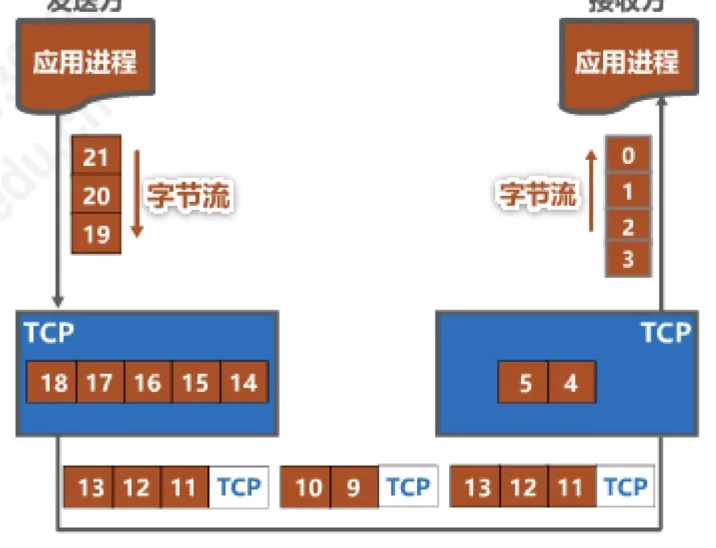
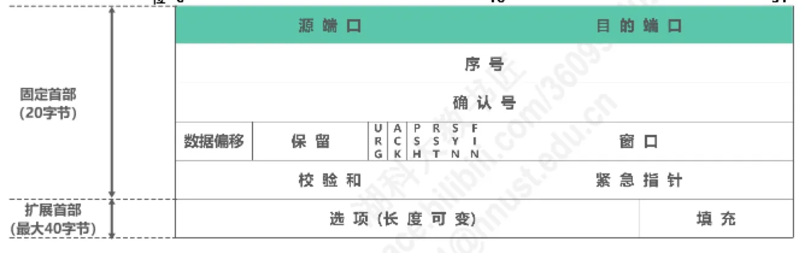
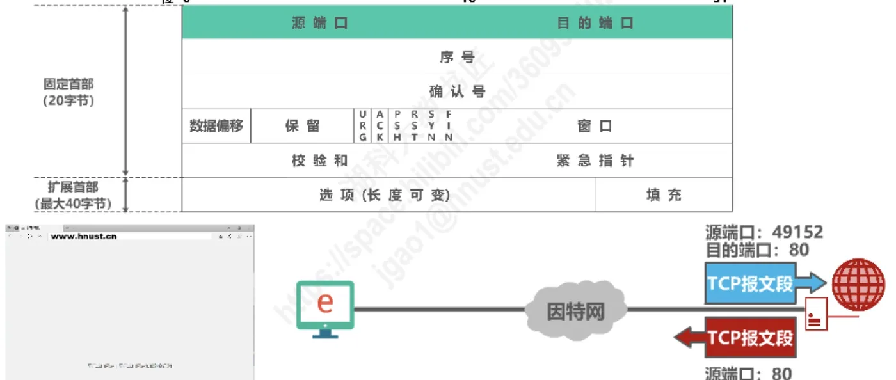
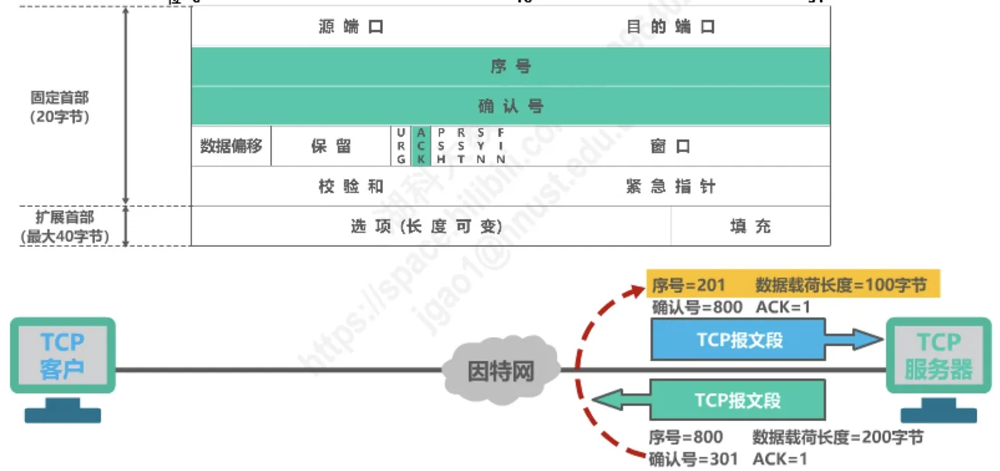
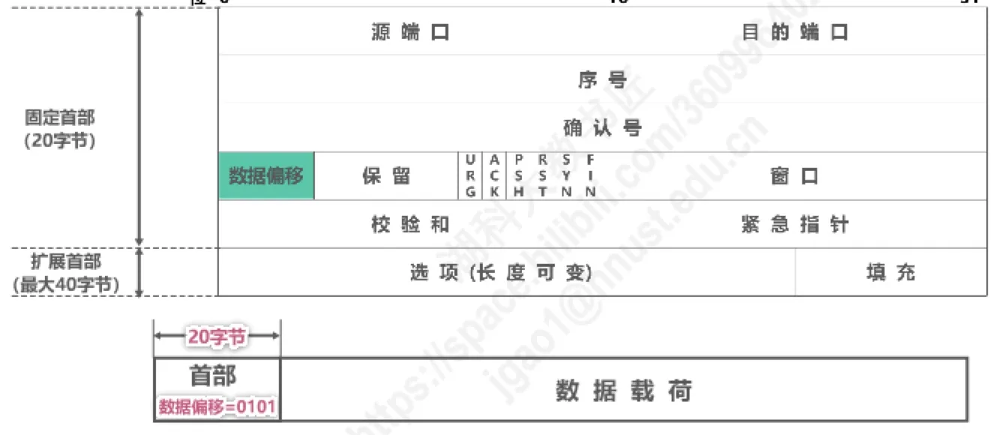
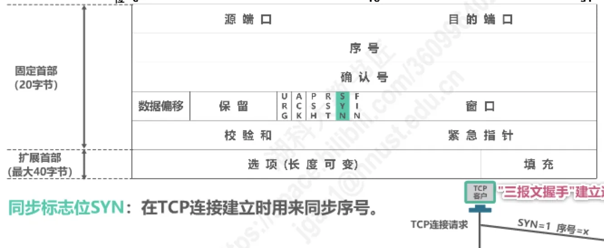
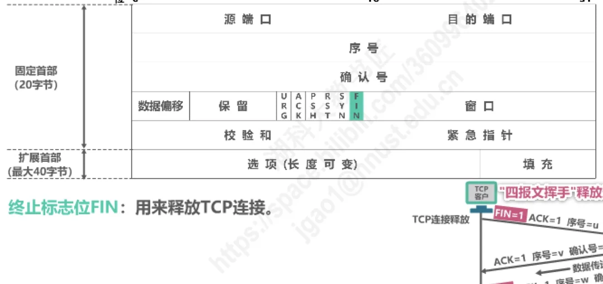
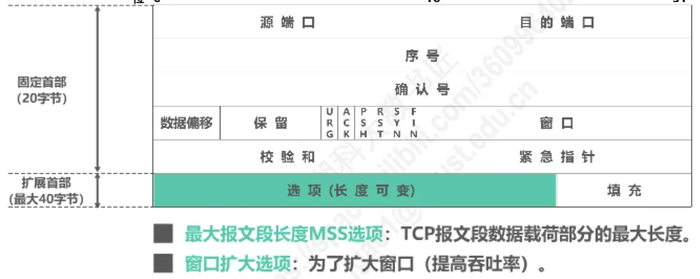
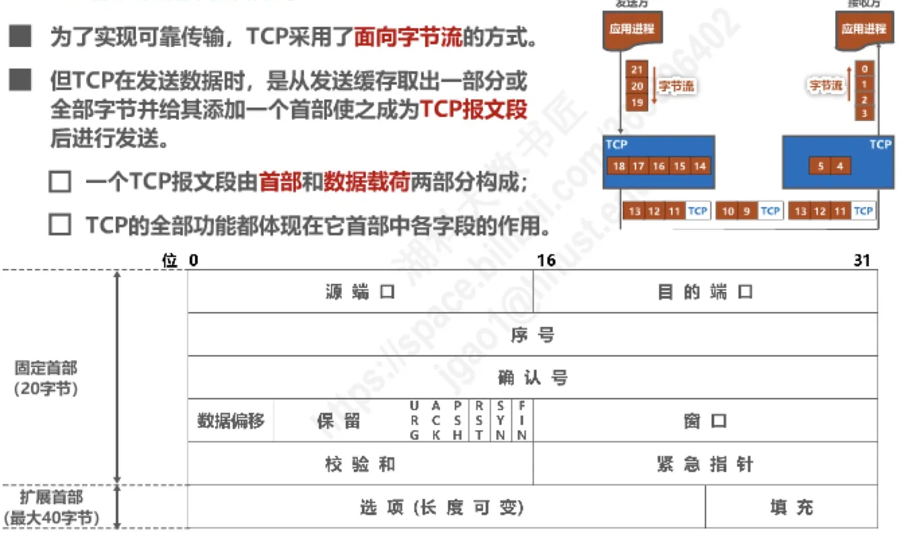

计算机通信与网络 · 第 5 章 运输层
5.9 TCP报文段的首部格式
这一节打开 TCP 报文段，看它的首部里到底有什么。前面几节讲的可靠传输、流量控制、拥塞控制，以及连接的建立与释放，最终都要落实为首部中某几个比特取什么值，所以首部字段是整章知识的「落脚点」。我们先看报文段由哪几部分构成、首部整体如何排布，再自上而下逐个字段讲清它的长度、取值范围和作用，最后讲长度可变的选项与填充。
1. TCP 报文段的构成与首部整体结构
TCP 采用面向字节流的方式来工作。发送方并不在意应用进程一次交下来多少数据，而是把数据看成连续的字节流；真正发送时，从发送缓存中取出一部分或全部字节，给它们加上一个首部，使之成为一个 TCP 报文段（TCP segment）后再发送出去。

由此可知，一个 TCP 报文段由首部和数据载荷两部分构成，而 TCP 的全部功能都体现在它首部中各字段的作用：确认与重传、流量控制、拥塞控制、连接管理，无一不是靠首部中的字段和标志位完成的。
首部又分为两部分：前面 20 字节是固定首部，每个 TCP 报文段都必须有；后面是长度可变的扩展首部，由选项和填充组成，最长 40 字节。两者相加，一个 TCP 报文段的首部最长可达 60 字节。

固定首部 20 字节恰好 160 比特：源端口和目的端口各 16 比特，序号和确认号各 32 比特，数据偏移 4 比特、保留 6 比特、六个标志位 6 比特，窗口、校验和、紧急指针各 16 比特。下表把它们一次列全，后面各节再逐个展开。
| 字段 | 长度 | 作用 |
|---|---|---|
| 源端口 | 16 比特 | 写入源端口号，标识发送该报文段的应用进程 |
| 目的端口 | 16 比特 | 写入目的端口号，标识接收该报文段的应用进程 |
| 序号 | 32 比特 | 指出本报文段数据载荷第一个字节的序号 |
| 确认号 | 32 比特 | 指出期望收到对方下一个报文段数据载荷第一个字节的序号，同时确认此前收到的所有数据 |
| 数据偏移 | 4 比特 | 指出首部长度，以 4 字节为单位 |
| 保留 | 6 比特 | 保留为今后使用，目前应置为 0 |
| 标志位 | 6 比特 | URG、ACK、PSH、RST、SYN、FIN 各占 1 比特 |
| 窗口 | 16 比特 | 指出发送本报文段一方的接收窗口，以字节为单位 |
| 校验和 | 16 比特 | 检查范围包括首部和数据载荷两部分 |
| 紧急指针 | 16 比特 | 指出紧急数据的长度，以字节为单位 |
| 选项 | 0～40 字节 | MSS、窗口扩大、时间戳、选择确认等可选功能 |
| 填充 | 可变 | 使首部长度成为 4 字节的整数倍 |
2. 源端口与目的端口
首部最前面是两个各占 16 比特的端口字段。源端口写入源端口号，用来标识发送该 TCP 报文段的应用进程；目的端口写入目的端口号，用来标识接收该 TCP 报文段的应用进程。它们正是 5.2 节所讲运输层「复用与分用」的落脚点：主机上有许多应用进程同时在通信，靠端口号才能把每个报文段交到正确的进程手里。
例如，客户进程使用 49152 与服务器 80 端口通信：客户发出的报文段中源端口为 49152、目的端口为 80；服务器回送的报文段则把两者互换，源端口为 80、目的端口为 49152。一取一换之间，收发的双方就都被唯一标识出来了。

3. 序号
序号占 32 比特，取值范围为 0 到 2³² − 1。这是一个循环使用的编号空间：序号增加到最后一个之后，下一个序号就又回到 0，这种现象称为序号回绕。
序号的作用是指出本报文段数据载荷的第一个字节的序号。TCP 面向字节流，它为字节流中的每一个字节都编上序号，而不是给报文段编号：例如某报文段首部中的序号为 166，就表示该报文段数据载荷的第一个字节在字节流中的编号是 166，其后各字节依次编号为 167、168……这样一来，接收方即使收到乱序的报文段，也能按序号把它们重新拼装成原来的字节流。
要留意的是，32 位的编号空间在高带宽链路上可能很快被绕回，绕回之后新旧数据的序号可能相同，仅凭序号无法区分——这个问题要等本节最后的选项部分（时间戳选项）才有标准化的应对办法。
4. 确认号
确认号同样占 32 比特，取值范围和回绕规则与序号相同。它指出期望收到对方下一个 TCP 报文段数据载荷的第一个字节的序号，同时也是对之前收到的所有数据的确认。
换句话说：若确认号为 n，则表明到序号 n − 1 为止的所有数据都已正确接收，期望接收序号为 n 的数据。这正是 5.7 节所讲的累积确认——一个确认号就把此前连续到达的数据全部确认掉了。
5. 确认标志位 ACK
ACK 只占 1 比特，它决定确认号字段算不算数：取值为 1 时确认号字段才有效，取值为 0 时确认号字段无效。TCP 还规定，在连接建立后所有传送的 TCP 报文段都必须把 ACK 置 1。

把序号和确认号放到一次真实的数据传送里看就清楚了。客户发往服务器的报文段中，序号 = 201、数据载荷长度 = 100 字节、确认号 = 800、ACK = 1：它从自己字节流的第 201 号字节开始发送 100 个字节（即 201～300），同时确认服务器此前发来的数据，期望对方下一个报文段从第 800 号字节开始。服务器回送的报文段中，序号 = 800、数据载荷长度 = 200 字节、确认号 = 301、ACK = 1：确认号 301 正好等于 201 + 100，说明服务器已正确收到 201～300 这 100 个字节，期望客户下一次从第 301 号字节开始发送。
可见两个方向各自维护一套字节编号：序号管自己发出去的数据，确认号管对方发过来的数据，二者互不干扰。
6. 数据偏移（首部长度）
数据偏移占 4 比特，并以 4 字节为单位，用来指出 TCP 报文段的数据载荷部分的起始处距离该报文段的起始处有多远。首部正夹在这两者之间，所以这个字段实际上指出的就是 TCP 报文段的首部长度。
由于首部固定长度为 20 字节，数据偏移字段的最小值为 (0101)₂，即十进制的 5；由于首部最大长度为 60 字节，该字段的最大值为 (1111)₂，即十进制的 15。也就是说，数据偏移每增加 1，首部就长 4 字节。

| 数据偏移（二进制） | 首部长度 | 选项与填充 |
|---|---|---|
| 0101（十进制 5） | 20 字节 | 0 字节 |
| 1111（十进制 15） | 60 字节 | 40 字节 |
这就是「首部长度字段只有 4 位，却能表示到 60 字节」的原因：它记录的不是字节数，而是 4 字节的个数。也正因为存在这条以 4 字节为单位的约定，选项用完之后才需要用填充把首部补成 4 字节的整数倍。
7. 保留
保留字段占 6 比特，是为今后使用而留出的余地，目前应全部置为 0。它本身不携带信息，但正是这 6 比特让固定首部中各字段的长度恰好凑成 160 比特，也就是 20 字节。
8. 窗口
窗口字段占 16 比特，以字节为单位，指出发送本报文段的一方的接收窗口。窗口值作为接收方让发送方设置其发送窗口的依据。
这正是 5.4 节所讲的流量控制——以接收方的接收能力控制发送方的发送能力：接收方把「我还能收多少字节」写进窗口字段告诉发送方，发送方据此调整发送窗口，不至于把对方淹没。同时也要注意，窗口只有 16 比特，最大只能表示 65535 字节，在带宽大、时延长的链路上会成为吞吐率的瓶颈，这一限制要靠后面讲的窗口扩大选项来突破。
9. 校验和
校验和占 16 比特，检查范围包括 TCP 报文段的首部和数据载荷两部分，首部与数据中的任何一位出错都可能被它发现。在计算校验和时，要在 TCP 报文段的前面加上 12 字节伪首部（pseudo-header）：伪首部带上源 IP 地址、目的 IP 地址等信息，把报文段与真正的收发双方绑定在一起，但它只参与校验和的计算，并不随报文段一起传送。
10. 同步标志位 SYN
同步标志位 SYN 在 TCP 连接建立时用来同步序号。图 6 是 5.8.1 节讲过的「三报文握手」建立连接的过程：
- 客户发送 TCP 连接请求：SYN = 1、ACK = 0、序号 = x，表明客户选定的初始序号为 x；
- 服务器若同意连接，则回送 TCP 连接请求确认：SYN = 1、ACK = 1、序号 = y、确认号 = x + 1，既选定了自己的初始序号 y，又确认了客户的序号 x；
- 客户再发送 TCP 确认：ACK = 1、序号 = x + 1、确认号 = y + 1，至此双方的序号完成同步，连接建立。
从确认号 x + 1、y + 1 可以看出，SYN 本身要占用一个序号，所以下一段数据的起始序号要加 1。简单地说，SYN 置 1 的报文段不是用来传送数据的，而是用来请求建立连接或接受连接请求。

11. 终止标志位 FIN
终止标志位 FIN 用来释放 TCP 连接。图 7 是 5.8.2 节讲过的「四报文挥手」释放连接的过程：
- 客户发往服务器：FIN = 1、ACK = 1、序号 = u、确认号 = v，表示自己已无数据要发送，请求释放连接；
- 服务器发往客户：ACK = 1、序号 = v、确认号 = u + 1，确认收到了释放请求，此时连接处于半关闭状态；
- 半关闭期间服务器仍可继续发送数据，数据传送结束后，服务器发往客户：FIN = 1、ACK = 1、序号 = w、确认号 = u + 1，表示自己也无数据要发送了；
- 客户发往服务器：ACK = 1、序号 = u + 1、确认号 = w + 1，确认服务器的释放请求，连接释放完毕。
与 SYN 一样，FIN 也要占用一个序号，所以确认号写成 u + 1、w + 1。可以看出，SYN 与 FIN 分别标记了连接生命周期的两端：一个负责建立，一个负责释放。

12. 复位 RST、推送 PSH 与紧急 URG
（1）复位标志位 RST
RST 用来复位 TCP 连接。当 RST = 1 时，表明 TCP 连接出现了异常，必须释放连接，然后再重新建立连接。RST 置 1 还用来拒绝一个非法报文段，或拒绝打开一个 TCP 连接。
（2）推送标志位 PSH
接收方的 TCP 收到 PSH 置 1 的报文段，会尽快把它上交应用进程，而不必等到接收缓存都填满后再向上交付。它解决的是「数据已经到了缓存、但应用进程需要马上拿到」的问题。
（3）紧急标志位 URG 与紧急指针
紧急标志位 URG 取值为 1 时紧急指针字段才有效，取值为 0 时紧急指针字段无效。紧急指针占 16 比特，以字节为单位，用来指明紧急数据的长度：当发送方有紧急数据时，可以把紧急数据插队到发送缓存的最前面，并立刻封装到一个 TCP 报文段中发送；紧急指针会指出本报文段数据载荷部分包含了多长的紧急数据，紧急数据之后才是普通数据。
13. 选项
选项字段长度可变，最长 40 字节，用来给 TCP 增加一些可由双方协商使用的功能。常见的有下面四种。

（1）最大报文段长度 MSS（Maximum Segment Size）
MSS 选项指出 TCP 报文段数据载荷部分的最大长度，即一个报文段里最多能装多少字节的数据，不包含首部。它与窗口、拥塞控制一起，共同决定了一次实际能发送多少数据。
（2）窗口扩大选项
窗口扩大选项是为了扩大窗口，提高吞吐率。窗口字段只有 16 比特，最大只能表示 65535 字节；用窗口扩大选项把窗口值按 2 的幂向左放大若干位之后，实际可用的窗口就能远大于 65535 字节，从而适应高带宽、长时延的链路。这个选项在连接建立阶段由双方协商确定（5.8.1 节）。
（3）时间戳选项
时间戳选项有两个用途：一是用来计算往返时间 RTT，5.6 节选择超时重传时间正需要 RTT 的测量值；二是用于处理序号超范围的情况，又称为防止序号绕回 PAWS（Protection Against Wrapped Sequence numbers，即防止序号绕回）。序号一旦回绕，同样的序号会再次出现，仅凭序号已无法判断报文段的新旧，时间戳提供了额外的区分依据。
（4）选择确认选项
选择确认 SACK（Selective ACK）选项让接收方能够告诉发送方「哪些数据块已经收到」。有了它，发送方只需要重传真正丢失的那部分数据，而不必把一整段连续数据重新传一遍。
14. 填充
填充的作用是把首部补齐。由于选项的长度可变，加上选项后首部不一定是 4 字节的整数倍；而数据偏移字段（也就是首部长度字段）以 4 字节为单位，所以在选项之后要用填充凑够整数个 4 字节，通常填入 0。
把这一节串起来看：应用进程交给 TCP 的是连续的字节流，发送方从发送缓存中取出若干字节，加上首部构成 TCP 报文段发送出去；接收方去掉首部，再按序号把数据还原成字节流交付给应用进程。首部从 20 字节起步，却承担了 TCP 的全部功能。

本节小结
- 一个 TCP 报文段由首部和数据载荷两部分构成：固定首部 20 字节，加最多 40 字节的选项与填充，首部最长 60 字节；TCP 的全部功能都体现在首部各字段的作用上。
- 源端口与目的端口各 16 比特，分别标识发送和接收本报文段的应用进程（复用与分用）；服务器回送时两者互换。
- 序号与确认号各 32 比特，都在 0 到 2³² − 1 之间循环回绕：序号指出本报文段数据载荷第一个字节的编号，确认号指出期望收到的下一个字节的编号、同时确认此前所有数据；ACK 置 1 时确认号才有效，连接建立后所有报文段都必须把 ACK 置 1。
- 数据偏移 4 比特、以 4 字节为单位，最小 0101（首部 20 字节）、最大 1111（首部 60 字节）；保留 6 比特目前置 0；窗口 16 比特是供流量控制使用的接收窗口；校验和 16 比特覆盖首部和数据载荷，计算时另加 12 字节伪首部；紧急指针 16 比特指出紧急数据的长度。
- 六个标志位各 1 比特：SYN 同步序号、FIN 释放连接（两者都要占用一个序号，见 5.8.1、5.8.2 节）、ACK 使确认号有效、RST 复位连接、PSH 尽快上交应用进程、URG 使紧急指针有效。
- 选项最长 40 字节，常见的有 MSS（数据载荷的最大长度）、窗口扩大（突破 16 比特窗口限制、提高吞吐率）、时间戳（计算 RTT，并配合 PAWS 处理序号回绕）、选择确认 SACK；填充把首部补成 4 字节的整数倍。